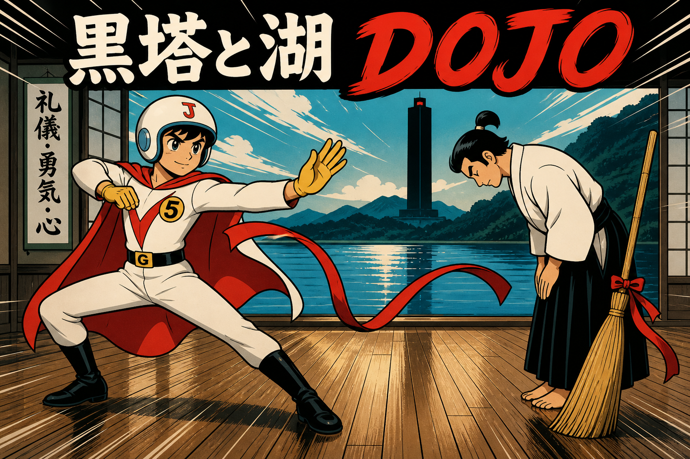

Budget Japanese cartoon. Speed lines. Same story as the manga. Fake fight. Real exercise. No toy sword. What is around you: broom, ribbon, sand, empty hands. Japanese pilots fly F-35s — Jun’s sky is not a stretch. Twist / click / squeeze is the same Pen.
Load the storyboard.
Hold the pose for leopard (keep still). Move slowly for tai chi (too fast fails). Keyboard: Space hold = leopard. Q/E = twist. F = squeeze. Enter = palm. Camera uses cheap frame-diff — not pose AI, not a medical device, not Carradine, not a fatality engine.